CSS Grid Layout - what is it?
CSS Grid Layout is a two-dimensional layout.
 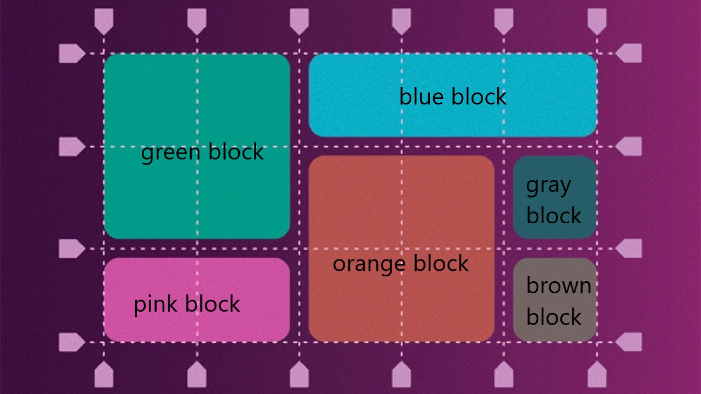
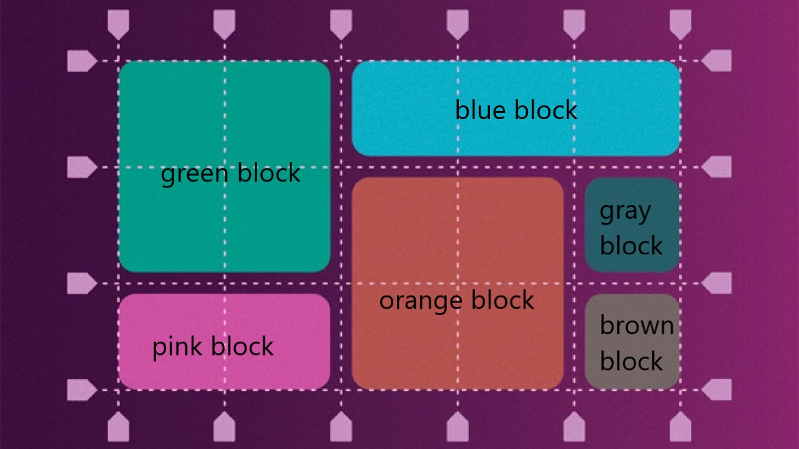
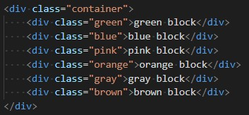
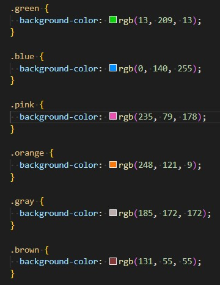
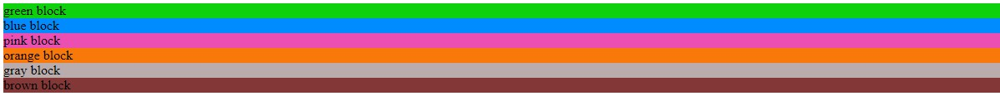
display: grid
to create columns: grid-template-columns
to create rows: grid-template-rows
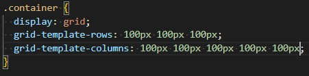
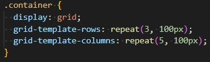
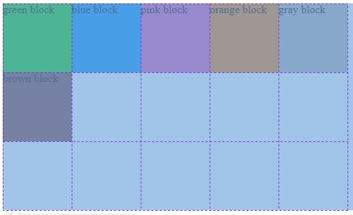
absolute units: px
relative units: em, vh, vw, %
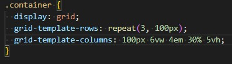
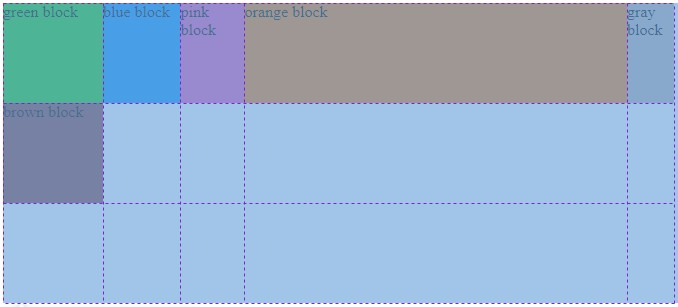
fr - fraction
grid-template-columns: 1fr 1fr 1fr
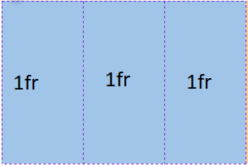
grid-template-columns: 2fr 1fr 1fr

grid-template-columns: 0.5fr 1fr 2.5fr
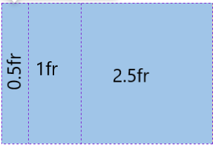
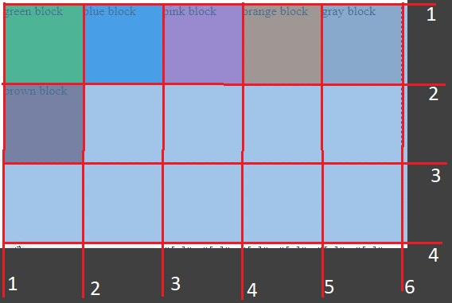
grid-column-start, grid-column-end
grid-row-start, grid-row-end
grid-column / grid-row
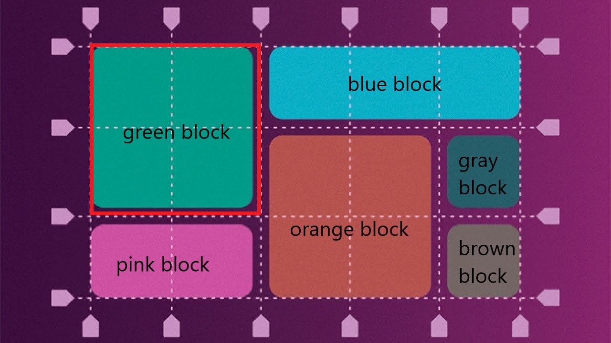
 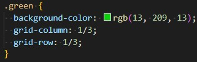
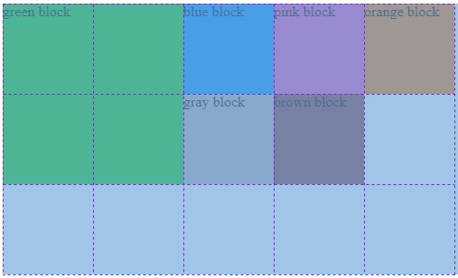
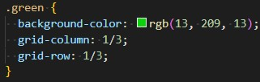
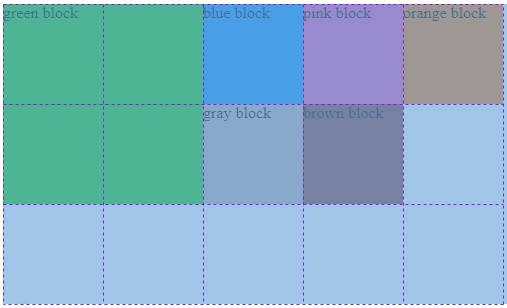
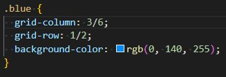
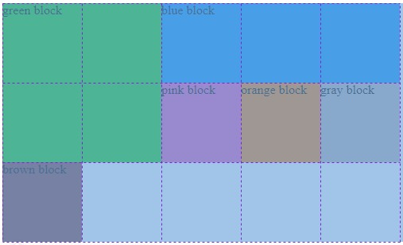
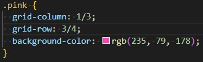
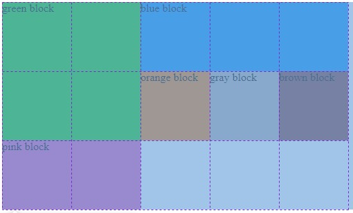
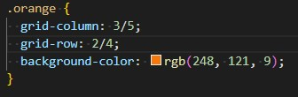
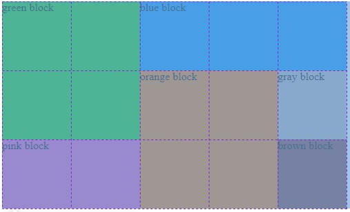
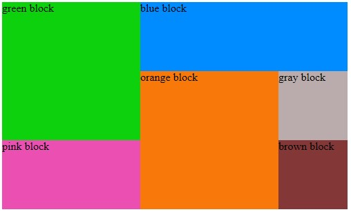
gap: 10px
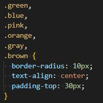
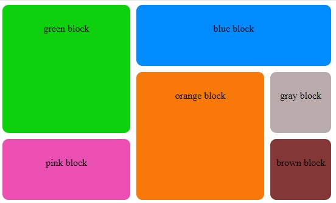
Z-index

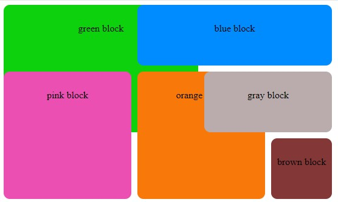
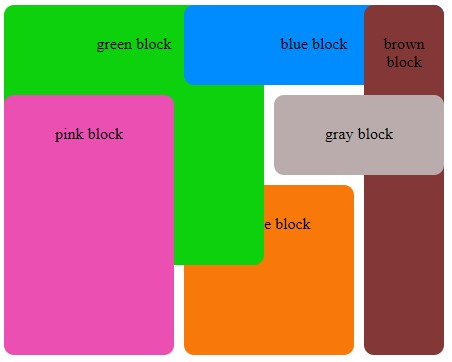
order: integer value
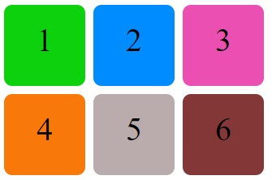
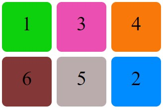
grid-area: name
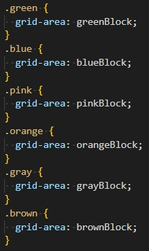
grid-template-areas: "scheme"
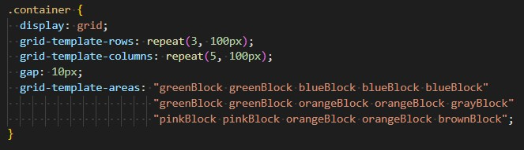
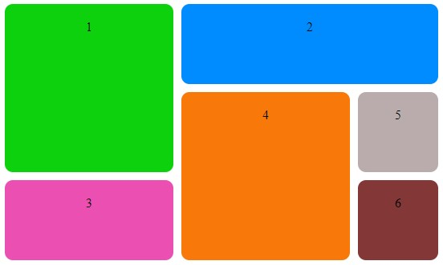
Thank you for attention!